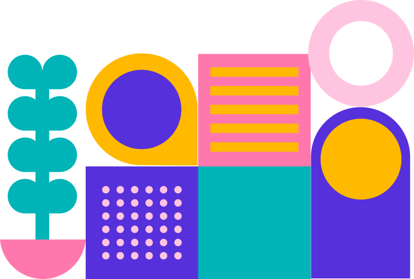

BaadMay is a simple interest-free payment platform that allows you to pay for anything in three monthly installments. You purchase now and keep paying later. We host all leading Pakistani brands so simplify your shopping sprees and shop for all essentials via BaadMay.
Customer Support
How can we help?

How it works
Online
- Login or Create a BaadMay account in a few simple steps:
- Download the BaadMay app on your device and log in if you already have an account with BaadMay
- If you are new to BaadMay:
- Add and verify your phone number
- Add your full name and CNIC
- Set-up and confirm your T-pin
- Add your Debit/Card to your BaadMay Wallet
Currently, BaadMay is an invite-only service limited to our exclusive customers. Under certain circumstances, BaadMay reserves the right to deny service to a consumer. But there is no eligibility criteria, except for receiving an invite from one of our existing customers. So ask around 👀 do any of your friends use BaadMay!?
Payments and Purchases
Manage and Make Payments
Once you have made a purchase, all future payments are set to auto-pay, so you do not need to worry about your remaining installments. In case of any errors with your payments due, you will be alerted by the app and can contact Customer Care for more info. To make an early manual payment yourself, go to the Payments area and clear up upcoming transactions. Wait for a few minutes for the app data to update and account for your remaining payment balance.
Once you add cards to your BaadMay wallet for every purchase you make the first installment is paid immediately. The rest of them are set on autopay. Unless your card on file has any issues, all future payments are made monthly.
Your due payments should be visible on the home screen of your BaadMay app. You may also visit the Settings tab under Profile to look up details.
Yes! You can always pay early. Visit the Payments area under your Profile and clear any upcoming transactions at your convenience.
If you are unable to clear your payments timely, you can contact Customer Care for assistance before your payment is due. If the date has passed, you will not be able to make any further transactions via BaadMay until the previous balance is cleared. You will have to contact Customer Care for more assistance.
BaadMay collects no extra or service charges from its consumers. The bill generated by the retailer is simply split into equal installments. Consumers may view the invoice generated from the retailer to see details of their transaction. If the consumer has any concerns regarding a transaction, preferably reach out to the specific retailer with a screenshot of your invoice. BaadMay Customer Care will also support our customers to the best of our abilities.
Payment Issues
Your transaction may be declined by your bank. In that case, reach out to your bank to ensure your card is not blocked for transactions or your transaction is not exceeding the dedicated online payment limit set for it. If the issue persists, we encourage you to wait for a few hours and try again. If neither of the options gives a positive result, please reach out to our Customer Care for further support.
Capture images of any proof of the double transaction and report your issue to BaadMay. Most likely, your bank or the BaadMay team will automatically revert the extra charged amount to you in a few hours. However, it is always best to report your concern to Customer Care. It is our priority to ensure our customers have a smooth shopping experience.
Capture an image of the double transaction, and if you are charged twice, submit proof of that too to Customer Care. If you have not been charged twice, it may just be a technical glitch and will be resolved automatically.
Purchase Issues
Your purchase limit is visible on your home screen, also accessible through the Payments menu under your Profile.
Navigate to the Profile tab and check Goals to complete a list of targets to increase your BaadMay purchase limit.
There may be holds on your account. Or an error reported with your card on file. Submit a report to Customer Care for direct assistance with your case.
You may be facing delays from your bank, or the information entered may be inaccurate. Try re-entering your details after a while. If the issue persists, contact your bank to identify issues with your account. If the matter is not resolved on their end, feel free to request support from BaadMay Customer Care.
To cancel an order, you will have to contact the retailer directly. Once they cancel your order, it will be automatically reported to BaadMay, and any transaction made will be reverted in a few days, considering standard banking procedures.
It may take a while for our data to update, after which any transaction carried out will be reverted. Give the system a few days to clear both, and then your due payments shall be cleared accordingly. However, if the issue persists report the problem with screenshots to Customer Care.
Customer Safety 🎯
Please visit BaadMay’s Privacy Policy to learn more.
Contact your bank immediately and request for your card to be blocked. This should prevent anyone from using your card. If your BaadMay account details are at the risk of being compromised, we encourage you to update your security settings immediately.
If your account details have been compromised and a transaction has been attempted without your authorization, report to Customer Care immediately with all relevant proofs regarding the transaction.
Account and Settings
Log in to your account on the BaadMay app and visit the Settings corner to view your profile details and edit or update any necessary information. If you are unable to update anything yourself, contact Customer Care and let us know how we may be able to help you.
Log in to your account on the BaadMay app and visit the Settings corner to view the payment options added to your BaadMay Wallet and change/update them. If you encounter a problem, try again after a while or contact Customer Care for more support.
In the Settings corner on your BaadMay app, visit the Notifications area to change settings for your device. You can also select your preferences for text alerts and emails from BaadMay in this menu.
Delivery and Returns
Delivery tracking should be available through our partner brands. Log in to your account on their website or contact them directly with your order number to get details.
All refunds are processed via BaadMay once you cancel your order with the retailer and it is approved by them. Unfortunately, if there is a dispute and your next payment is due, BaadMay still requires you to complete the payment. As soon as the retailer processes your cancellation or refund, it will be reported to BaadMay directly and the total amount you have paid will be reverted accordingly. Read more: If I am not satisfied with my order how do I request a return and refund?
All returns and refund requests will have to be submitted directly to the retailer and will be processed by them. If the retailer marks out a monetary refund, it will be reported to BaadMay and your transactions will be reverted automatically. Unfortunately, if the retailer does not process monetary refunds and returns them as shopping points, credits to your brand wallet, or a coupon, BaadMay will not be able to revert your transactions and the acceptable alternative will be provided by the retailer directly only.